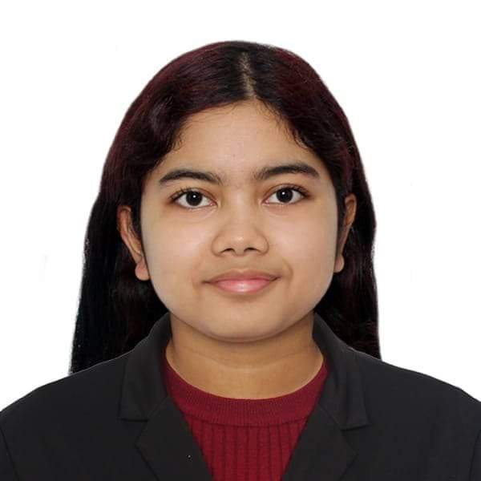

Hello! I'm Jaclyn Aloor, a BSIT student from Sampaloc, Manila. Fun fact about me: I'm half-Filipino and half-Indian. I enjoy reading and writing in my free time, and I am passionate about technology and creativity. I am working toward a future in 3D animation.
I chose BSIT because I have always been curious about how technology works and how it can be used to make life better. Ever since I was young, I was drawn to how systems connect people and solve everyday problems. BSIT feels like the perfect path to build the skills I need to turn that passion into a real career.
Thanks for stopping by!